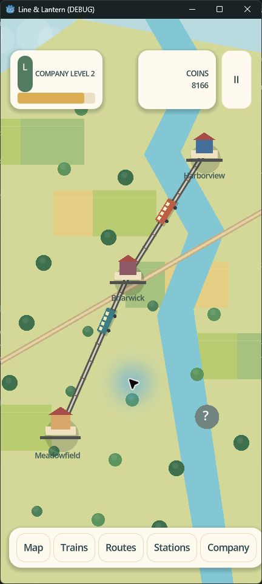

01
Every train has a job
Choose a fleet with character, then watch trains depart, gather speed, cross the country, and arrive with a full platform waiting.

A tiny country. A growing railway.
Build the connections that bring a country closer together in a hand-drawn railway company game for iPhone.
Step aboardWork in progress · Godot 4 · Portrait-first
A railway with a pulse
Line & Lantern is a mobile railway-management game about the quiet satisfaction of making a place more connected. Buy the right train, keep your routes healthy, build out busy stations, and watch each new line make the landscape feel more alive.
On the line
01
Choose a fleet with character, then watch trains depart, gather speed, cross the country, and arrive with a full platform waiting.
02
Connect villages to towns and cities, balance demand with capacity, and make every new route earn its place on the map.
03
Upgrade quiet stops into busy hubs with longer platforms, stronger demand, and a much bigger presence in the landscape.
The point of the journey
“The best transport games make a map feel like a memory. We want this one to feel like your country.”
Follow the build
See the Godot source, follow the journey toward iPhone, and help shape the next stop.
Visit the project